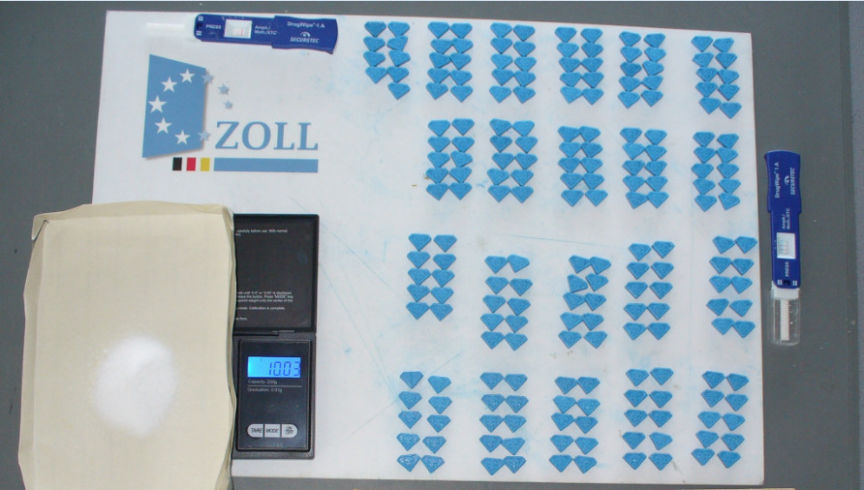
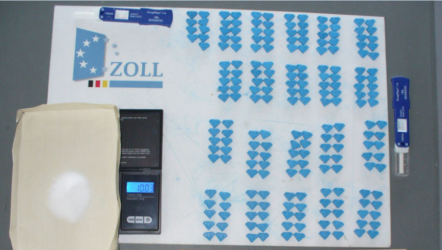

Austrian Duo Purchased Ecstasy on the Dark Web
Police in Lower Austria identified two suspects accused of importing and reselling ecstasy and amphetamine purchased through the dark web.

According to a press release by the main customs office in Landshut, Bavaria, investigations that led to the suspects' apprehension resulted from the interception of drug packages addressed to the suspects.
In July 2022, customs officers at a package distribution center in Munich intercepted suspicious outgoing packages headed to Austria. On opening the packages, the officers allegedly found and seized a total of 209 ecstasy pills and 10.3 grams of amphetamine.
In November, the officers intercepted five more packages addressed to the same recipient in Austria. The officers opened the packages and found that they contained a total of 254 ecstasy tabs.
German authorities shared the information with the Lower Austrian State Criminal Police Office, resulting in a joint cross-border operation.
Investigations by Austrian authorities led to the identification of two suspects. The investigators reportedly established that the suspects had been having the drugs mailed to a fake mailbox after purchasing them on the darknet. The investigators also accuse the duo of reselling the imported drugs.

Seized ecstasy and amphetamine
According to a press release by the main customs office in Landshut, Bavaria, investigations that led to the suspects' apprehension resulted from the interception of drug packages addressed to the suspects.
In July 2022, customs officers at a package distribution center in Munich intercepted suspicious outgoing packages headed to Austria. On opening the packages, the officers allegedly found and seized a total of 209 ecstasy pills and 10.3 grams of amphetamine.
In November, the officers intercepted five more packages addressed to the same recipient in Austria. The officers opened the packages and found that they contained a total of 254 ecstasy tabs.
German authorities shared the information with the Lower Austrian State Criminal Police Office, resulting in a joint cross-border operation.
Investigations by Austrian authorities led to the identification of two suspects. The investigators reportedly established that the suspects had been having the drugs mailed to a fake mailbox after purchasing them on the darknet. The investigators also accuse the duo of reselling the imported drugs.
Quote:Elvira Enders-Beetschen, spokeswoman for the main customs office in Landshut
This case shows once again how important good cross-border cooperation is in the fight against drug smuggling.